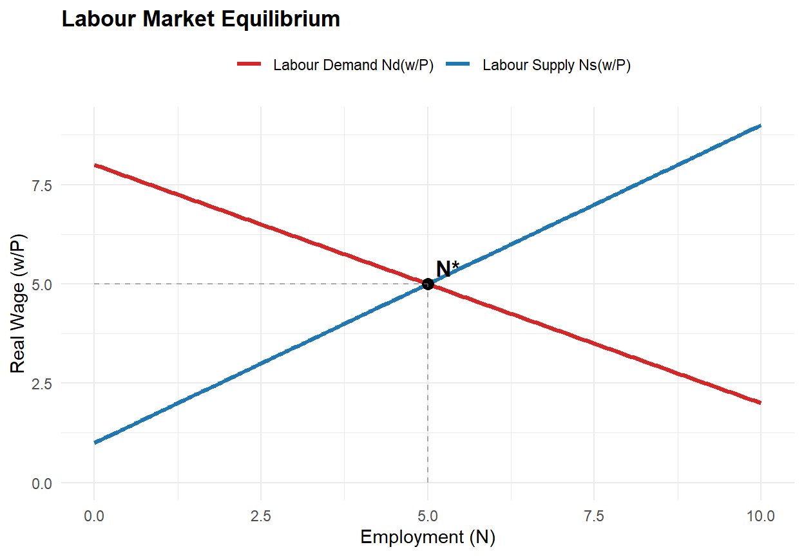
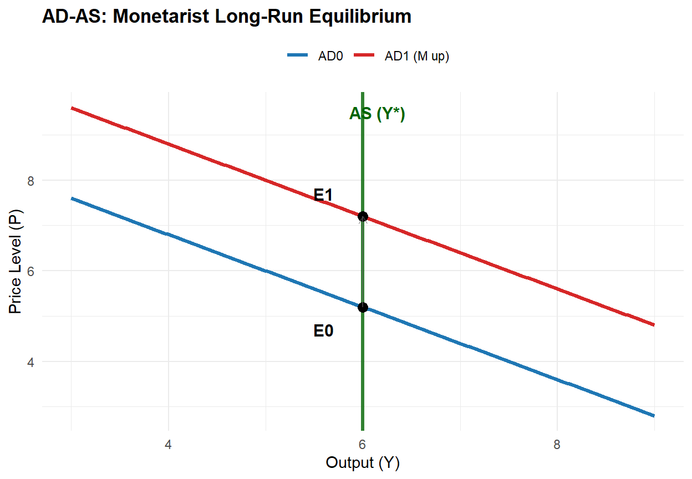
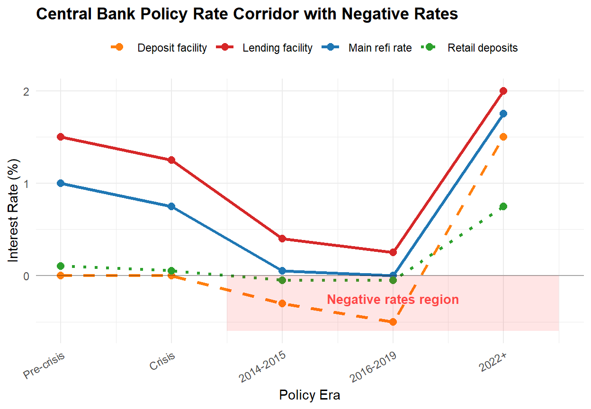

Milton Friedman and Monetarism
1 Introduction and learning objectives
Monetarism, most strongly associated with Milton Friedman, reasserted the centrality of money in macroeconomic fluctuations and inflation. The core claim is that money growth is a key driver of nominal spending in the short run and the price level over longer horizons, and that policy should be guided by stable, rule-like principles rather than discretionary fine tuning.
This chapter examines the main monetarist propositions and their relevance for modern monetary policy:
- The quantity-theory position and the monetarist claim that money matters, with a focus on the stability (or not) of velocity.
- The monetarist macro model of dichotomy and money neutrality (labour market → output → money market → prices) and how it rationalises the proposition that money has no long-run real effects.
- The short-run non-neutrality logic via money illusion and expectations adjustment, connected to the Phillips curve controversy and the natural-rate hypothesis.
- The distinction between nominal and real interest rates (Fisher equation), and why persistent inflation affects nominal interest rates (the Fisher effect) even when long-run real rates are pinned by real forces.
- The logic of inflationary equilibria and hyperinflation, using Cagan-style definitions, fiscal-monetary linkages, and historical evidence on stabilisations.
- A modern evidence-based discussion: Japan’s long zero lower bound (ZLB) period, post-2008 QE, negative rates, and COVID-era money growth, showing where monetarist predictions perform well and where institutional realities complicate simple money-growth targeting.
2 Intellectual context: what Friedman was responding to
In his presidential address “The Role of Monetary Policy,” Friedman characterises the mid-20th-century swing in professional opinion: from early confidence in central-bank fine tuning (1920s), to the belief that monetary policy is a string (early Depression-era aphorisms), to the dominance of Keynesian analysis and fiscal policy in the postwar period, and then back toward renewed belief in monetary potency after inflationary experience and reinterpretations of the Great Depression.
Friedman’s narrative frames monetarism as a historical research programme: (i) reinterpretations of monetary history, (ii) restatement of the quantity theory in a modern portfolio/asset-demand language, and (iii) derivation of policy principles that acknowledge lags and uncertainty.
3 The quantity theory position and monetarist propositions
At its simplest, the quantity theory starts from the accounting identity:
\[ MV \equiv PY, \]
where \(M\) is a monetary aggregate, \(V\) velocity, \(P\) the price level, and \(Y\) real output. Monetarism becomes a substantive theory when it adds empirical claims (or approximations) such as:
- velocity is sufficiently stable (or at least predictable conditional on a small set of variables), implying a stable relationship between money growth and nominal spending growth;
- in the long run, money is neutral (changes in the level of money affect nominal variables like \(P\) and nominal wages, not real output);
- in the short run, money can be non-neutral because wages/prices adjust with lags, generating transitional output and employment effects.
An institutional summary by the IMF documents why monetarism’s prominence fell when velocity became unstable amid deregulation and financial innovation, an empirical point that remains central to understanding monetary policy frameworks (Jahan and Papageorgiou, 2014).
4 A canonical monetarist macro model: dichotomy and neutrality
The canonical monetarist model can be written as a four-block system, which clarifies the dichotomy.
Labour market (real wage determination). Let real wage be \(w/P\). Labour supply and demand depend on the real wage:
\[N^s = N^s\left(\frac{w}{P}; \psi\right), \quad N^d = N^d\left(\frac{w}{P}; K\right)\]
with equilibrium employment \(N^*\) solving \(N^s = N^d\). Natural unemployment follows from labour force \(L\): \(u^* = L - N^*\) (or as a rate \(u^* = 1 - N^*/L\)).
Production function (real output supply). With capital \(K\) and equilibrium labour \(N^*\):
\[ Y^s = F(K, N^*). \]
Real output is therefore supply-determined in the long-run classical/monetarist benchmark.
Goods market (IS-style relation). Aggregate demand depends on the nominal interest rate \(i\) and fiscal instruments:
\[ Y^d = Y^d(i, G, T), \]
with \(\partial Y^d/\partial i < 0\), \(\partial Y^d/\partial G > 0\), \(\partial Y^d/\partial T < 0\) as standard comparative statics. In the classical benchmark, \(i\) is a relative price in real terms that equilibrates saving and investment (loanable funds), but Friedman’s macro narrative emphasises that money can shift spending and thus nominal income when prices are sticky or when monetary shocks occur.
Money market / money demand (quantity-theory money demand). A simple transactions-style demand for money is:
\[M^d = k \cdot P \cdot Y,\]
where \(k\) is the desired money-income ratio (inverse velocity). In long-run equilibrium with a given \(Y=Y^s\), the money market pins down \(P\):
\[P = \frac{M}{k Y^s}.\]
Thus the model delivers a classical dichotomy: real equilibrium \((N^*,Y^s)\) is determined outside the monetary block; the monetary block determines nominal magnitudes.
Figure 1 illustrates how \(N^*\) is determined by the real wage \(w/P\). Figure 2 shows the flow from the labour market through production and demand to the AD-AS framework, with vertical long-run aggregate supply and aggregate demand derived from \(Y=(1/k)(M/P)\).
flowchart TB A["Labour market<br/>Ns(w/P), Nd(w/P)"] --> B["Natural employment<br/>N*"] B --> C["Production<br/>Ys = F(K, N*)"] C --> D["Given Ys,<br/>real output pinned"] E["Money demand<br/>Md = k P Y"] --> F["Money market<br/>M = Md"] D --> F F --> G["Price level<br/>P = M / (kY)"] G --> H["Nominal wage adjusts<br/>so w/P returns to equilibrium"] H --> A

5 Comparative statics tables and policy interpretation
5.1 Table 1: One-off increase in money level \(M\) (short run vs long run)
The following table illustrates the comparative statics of monetary expansion, showing long-run neutrality and short-run transitional effects under money illusion and sticky nominal wages.
| Variable | Short run (prices/wages not fully adjusted; money illusion/stickiness) | Long run (fully adjusted nominal wages/prices; classical/monetarist benchmark) |
|---|---|---|
| \(M\) | Up (policy/monetary expansion) | Up (permanent level shift) |
| \(P\) | Tends to rise, but not necessarily one-for-one immediately | Rises approximately one-for-one with \(M\) (neutrality) |
| \(w\) (nominal wage) | Adjusts sluggishly; may rise less than \(P\) initially | Rises proportionately with \(P\) so that \(w/P\) returns to equilibrium |
| \(w/P\) (real wage) | May temporarily fall if \(P\) rises faster than \(w\) → firms hire more | Returns to labour-market equilibrium |
| \(N\), \(Y\) | May temporarily rise if firms respond to lower perceived real wage | Returns to \(N^*\), \(Y^s\) |
| Unemployment \(u\) | May temporarily fall (below \(u^*\)) | Returns to \(u^*\) |
| Key mechanism | Misperception/adjustment lags → short-run non-neutrality | No money illusion + flexible prices → long-run neutrality |
5.2 Table 2: Permanent increase in money growth \(\mu\) (super-neutrality benchmark and Fisher effect)
Let money growth be \(\mu \equiv \Delta M/M\), inflation \(\pi \equiv \Delta P/P\), and real output growth \(g \equiv \Delta Y/Y\). From \(MV=PY\), under stable \(V\):
\[ \pi \approx \mu - g. \]
With expected inflation \(\pi^e\), the Fisher relation can be written:
\[ i \approx r + \pi^e. \]
| Proposition | Prediction (benchmark) | What changes in modern data-rich policy regimes |
|---|---|---|
| Money growth and inflation | Higher long-run \(\mu\) → higher long-run \(\pi\) (unless \(V\) falls persistently) | Velocity instability can weaken money-nominal GDP links, complicating money-growth targeting |
| Nominal vs real rates | Higher \(\pi^e\) → higher \(i\) (Fisher effect) with \(r\) pinned by real forces in long run | At or near the ZLB, \(i\) may be constrained; term premia and longer yields become policy targets via QE |
| Super-neutrality | Changes in \(\mu\) do not permanently change \(Y\), \(N\), \(u\) (benchmark super-neutrality) | In practice, regime shifts, financial frictions, and policy credibility can generate persistent real effects in transitions |
6 Money illusion, the Phillips curve, and the natural-rate hypothesis
The narrative linking short-run monetary expansions to temporary unemployment reduction is consistent with expectations-augmented Phillips curve logic: observed inflation/unemployment correlations reflect short-run nominal rigidities or misperceptions, but do not deliver a stable long-run trade-off. Friedman’s 1968 address makes this a central argument by insisting monetary policy cannot peg unemployment below its natural benchmark except temporarily, because expectations adjust (Friedman, 1968).
The key historical sequence is:
- Phillips (1958) documented a nonlinear empirical relationship between unemployment and wage inflation for the UK over a long historical sample.
- Samuelson and Solow (1960) interpreted this relationship in a policy context (later debates question how menu-like their intended interpretation was).
- Phelps (1967) provided an explicit expectations-based framework, arguing that inflation expectations affect unemployment dynamics and that systematic policy cannot permanently trade inflation for unemployment.
- Friedman (1968) popularised the policy conclusion: attempts to hold unemployment below its natural level lead to accelerating inflation, not a stable improvement in real activity.
In accessible final-year notation, an expectations-augmented Phillips curve can be written as:
\[ \pi_t = \pi_t^e - \alpha(u_t - u^*) + \nu_t, \]
where \(\alpha>0\) measures how strongly unemployment gaps affect inflation (a larger \(\alpha\) means inflation responds more to a given deviation of \(u_t\) from \(u^*\)), and \(\nu_t\) is a supply/markup disturbance term capturing shocks such as energy-price spikes, tax changes, or cost-push pressure. Under adaptive expectations \(\pi_t^e \approx \pi_{t-1}\), disinflation implies transitional unemployment (the sacrifice ratio), a key point in the monetarist critique of discretionary stabilization.
flowchart LR A["Monetary expansion: up M"] --> B["Nominal spending up"] B --> C["Short run:<br/>wages/prices adjust slowly"] C --> D["Perceived real wage falls<br/>(money illusion / stickiness)"] D --> E["Employment and output<br/>temporarily up"] E --> F["Expectations catch up:<br/>inflation anticipated"] F --> G["Nominal wages/prices<br/>adjust fully"] G --> H["Real wage returns to equilibrium"] H --> I["Output/employment return<br/>to natural levels; inflation higher"]
7 The policy message: rules, lags, and skepticism about fine tuning
A signature monetarist policy conclusion is that activist discretionary policy is likely to destabilize because policy operates with long and variable lags. This motivates the constant money-growth rule (often presented as the \(k\%\) rule): target money growth at a stable constant rate roughly consistent with long-run real output growth (or desired inflation). Modern central banking rarely implements the rule in its original form, but it remains a benchmark in rules-versus-discretion debates and in the design of robust frameworks.
8 Monetarism at the zero lower bound (ZLB), effective lower bound (ELB), and with QE/negative rates
Modern monetary policy must address an apparent tension: monetarism emphasises targeting money growth, but central banks predominantly implement policy through interest-rate setting, supported by balance-sheet tools when rates hit lower-bound constraints. Here, the zero lower bound (ZLB) refers to the benchmark case where nominal policy rates cannot fall below zero, while the effective lower bound (ELB) is the practical limit faced by a central bank once cash, institutional frictions, and transmission constraints are taken into account. In practice, the distinction between money and rates is not a binary choice: interest-rate policy is implemented through operations that affect the central bank balance sheet and monetary aggregates; conversely, balance-sheet policies matter by altering asset supplies, term premia, and risk premia.
Example: the COVID-era money surge (US and euro area).
- In the US, the Fed’s H.6 release shows a dramatic jump in M2 during early 2020, illustrating that money aggregates can move rapidly in crisis conditions (Governors of the Federal Reserve System, 2020).
- In the euro area, the ECB documented a marked acceleration in broad money growth in March 2020 and linked it to emergency liquidity needs and precautionary money holding amid pandemic uncertainty (Bank, 2020a, 2020b).
This observation illustrates a key point: monetarists emphasised that velocity stability is crucial. In crises, velocity can shift sharply as liquidity preference rises, so money growth alone does not map mechanically into inflation in the short run.
timeline title Monetarism-Relevant Monetary Episodes (selected milestones) 1999 : Japan ZIRP starts 2001 : Japan QE starts 2008 : US ELB and LSAP/QE 2009 : UK QE starts 2014 : Euro area negative DFR 2016 : Negative-rate toolkit widens 2020 : COVID QE and PEPP 2022 : QT begins (several CBs)
9 Nominal and real interest rates in practice
The nominal versus real interest rate discussion connects the Fisher equation to two sets of contemporary facts:
- At the ZLB, the Fisher relation does not disappear, but nominal rates can be constrained, shifting adjustment into expected inflation, real rates, and longer-term yields.
- Negative policy rates show that the lower bound is not literally zero for policy rates, but practical constraints (cash, retail deposit rate rigidities, and bank profitability concerns) matter (Bank for International Settlements, 2016; Borio and Zabai, 2016).

10 Inflationary equilibria: money demand, fiscal dominance, and the high-inflation trap
Inflationary equilibria can be analysed using a simplified Cagan-style framework consisting of (i) a semi-log money demand and (ii) a government budget constraint implying seigniorage finance.
A standard high-inflation money demand specification is:
\[ \frac{M}{P} = A e^{-\alpha \pi^e}, \quad \alpha>0, \]
so higher expected inflation reduces real money demand. Combine this with a government need for seigniorage (money creation revenue) to finance deficits when other financing is limited. A key pedagogical point is nonlinearity: when inflation rises, the tax base (real balances) can shrink rapidly, so generating a given amount of seigniorage may require ever higher inflation, potentially producing unstable dynamics or multiple equilibria in some models.
11 Hyperinflation: definition, evidence, and endings
Definition (Cagan criterion). Hyperinflation begins when monthly inflation first exceeds 50% and ends when it falls below 50% for at least a year (Fund, 2007).
Empirical regularity: fiscal regime change and credible stabilisation. Sargent’s classic “Ends of Four Big Inflations” argues that dramatic hyperinflations ended alongside major fiscal regime shifts and reforms that changed expectations about future money creation (Sargent, 1982).
Hyperinflation is significant because it exemplifies the starkest money–prices relationship and provides direct historical evidence of monetisation of fiscal deficits.
flowchart TB A["Large fiscal deficits<br/>+ weak tax capacity"] --> B["Monetization /<br/>seigniorage financing"] B --> C["Money growth accelerates"] C --> D["Inflation accelerates;<br/>real money balances fall"] D --> E["Higher inflation needed<br/>for same seigniorage"] E --> F["Potential high-inflation trap / instability"] F --> G["Stabilisation:<br/>credible fiscal + monetary reform"] G --> H["Expectations reset;<br/>money growth falls; inflation collapses"]
12 Comparative table: post-1990 policy episodes, tools, and outcomes
The following table summarises post-1990 monetary episodes and their policy responses.
Illustrative episode details in the table are drawn from official central bank releases/timelines and well-known empirical studies, including the BoJ policy chronology, Bank of England announcements and QE evidence, ECB press releases on negative rates and PEPP, and the New York Fed LSAP staff report (England, 2009; Joyce et al., 2010; Gagnon et al., 2010; Bank, 2014, 2020a; Japan, 2026).
| Episode | Monetary-policy constraint | Main tools used | Scale/timing (illustrative, official) | Evidence on financial conditions/outcomes |
|---|---|---|---|---|
| Japan (late 1990s-2000s; long ZLB era) | Persistent low inflation/deflation; policy rates near zero | ZIRP; QE (current account balances target); later QQE | BoJ timeline: ZIRP (Feb 1999-Aug 2000); QE (Mar 2001-Mar 2006) with explicit balance targets (e.g., ~JPY5tn initial current account balance target) | Illustrates liquidity preference/velocity shifts and the difficulty of rekindling inflation |
| UK (GFC response, 2009-2010) | Bank Rate at effective lower bound | QE via gilt purchases financed by reserves | MPC March 2009: Bank Rate cut to 0.5% and GBP75bn purchases; by Feb 2010 purchases reached GBP200bn; BoE estimates gilt yields down about 100bp | BoE research attributes significant yield compression to QE; macro effects exist but are uncertain and model-dependent |
| Euro area (negative rates + PEPP, 2014-2024) | Low inflation + fragmentation risk; ELB dynamics | Negative deposit facility rate; asset purchases APP/PEPP; TLTROs | ECB cut deposit facility rate to -0.10% effective 11 June 2014; PEPP launched at EUR750bn (Mar 2020), expanded to EUR1,850bn; PEPP+APP estimated to reduce GDP-weighted 10-year yield about 45bp in 2020 | ECB documents term-premium compression and transmission support; negative rates transmit unevenly |
| US (ZLB and LSAPs, 2008-2010; COVID and beyond) | Fed funds at 0-25bp (Dec 2008), later ELB again in 2020 | LSAP/QE; forward guidance; liquidity facilities | NY Fed SR441: purchases announced Nov 2008; expanded March 2009 to total up to USD1.75tn; designed to lower private borrowing rates by reducing term/risk premia | NY Fed analysis finds meaningful reductions in longer-term rates, mainly through lower term/risk premia rather than expectations of future short rates |
13 Policy implications: what survives from Friedman’s monetarism today
Core propositions and durable insights: The broad long-run propositions are consistent with standard textbook treatments and the monetarist literature (Friedman, 1968; Lewis and Mizen, 2000).
- Inflation cannot persist indefinitely without accommodating monetary expansion; monetary conditions matter for nominal aggregates over longer horizons.
- Policy should be evaluated under lags and uncertainty; discretionary fine tuning can be destabilising when transmission is slow and variable.
- Asset purchases and balance-sheet tools can matter at the ZLB by lowering term premia and risk premia, consistent with portfolio-balance mechanisms.
Limits, qualifications, and modern extensions:
- Stable velocity is not guaranteed; financial innovation and regulation shape money demand and can destabilise money-nominal GDP links, reducing the practicality of money-growth targeting.
- Money supply is not a single object; it depends on definitions (M0/base vs M1/M2/M3) and on the banking system’s credit creation, which is why modern central banks focus on interest-rate implementation and broader indicator sets.
14 Problem questions
- Derivation and interpretation. Starting from \(MV \equiv PY\), derive \(\pi \approx \mu + v - g\) where \(v\) is velocity growth. Under what assumptions does this collapse to \(\pi \approx \mu - g\)? What happens when \(V\) becomes unstable?
- Neutrality table. Using Table 1 above, explain precisely which assumptions deliver long-run neutrality. Then propose one realistic friction (wage stickiness, imperfect information, financial frictions) that generates the short-run deviations. Anchor your discussion in Friedman’s warnings about policy overreach.
- Natural rate and expectations. Write an expectations-augmented Phillips curve and show algebraically why a permanent attempt to hold \(u<u^*\) generates accelerating inflation under adaptive expectations. Use Friedman (1968) and Phelps (1967) as your anchors.
- Nominal vs real interest rates. From the Fisher equation \(i=r+\pi^e\), discuss what each term means and how negative policy rates complicate measurement and transmission. Use BIS evidence on negative-rate implementation to discuss one channel that behaves differently at negative rates.
- LSAP/QE mechanism. Explain the portfolio-balance channel in your own words and distinguish term-premium effects from expected-future short-rate effects. Why does this distinction matter for whether QE proves monetarism?
- Hyperinflation essay. Using the IMF definition and Sargent’s evidence, explain why hyperinflation is typically linked to fiscal regimes and why stabilisation often requires credible fiscal reform. How does this relate to monetarist emphasis on money growth?
14.1 References
Bank, E.C. (2014) “ECB introduces a negative deposit facility interest rate.” Press release. Available at: https://www.ecb.europa.eu/press/pr/date/2014/html/pr140605_2.en.html.
Bank, E.C. (2020a) “ECB announces 750 billion euro pandemic emergency purchase programme (PEPP).” Press release. Available at: https://www.ecb.europa.eu/press/pr/date/2020/html/ecb.pr200318_1~3949d6f266.en.html.
Bank, E.C. (2020b) “The impact of the ECB’s monetary policy measures taken in response to the COVID-19 crisis.” Economic Bulletin, Box. Available at: https://www.ecb.europa.eu/press/economic-bulletin/focus/2020/html/ecb.ebbox202004_07~145cc90654.en.html.
Bank for International Settlements (2016) “How have central banks implemented negative policy rates?” BIS Quarterly Review [Preprint]. Available at: https://www.bis.org/publ/qtrpdf/r_qt1603e.htm.
Borio, C. and Zabai, A. (2016) Unconventional monetary policies: A re-appraisal. BIS Working Papers 570. Bank for International Settlements. Available at: https://www.bis.org/publ/work570.htm.
England, B. of (2009) “MPC announcement: Bank rate reduced to 0.5.” Press release. Available at: https://www.bankofengland.co.uk/news/2009/march/mpc-march-2009.
Friedman, M. (1968) “The role of monetary policy,” American Economic Review, 58(1), pp. 1–17.
Fund, I.M. (2007) Lessons from high inflation episodes. Working Paper WP/07/99. International Monetary Fund.
Gagnon, J. et al. (2010) Large-scale asset purchases by the federal reserve: Did they work? Staff Report 441. Federal Reserve Bank of New York. Available at: https://www.newyorkfed.org/research/staff_reports/sr441.html.
Governors of the Federal Reserve System, B. of (2020) “Money stock and debt measures (H.6), june 25, 2020.” Statistical release. Available at: https://www.federalreserve.gov/releases/h6/20200625/.
Jahan, S. and Papageorgiou, C. (2014) “What is monetarism?” Finance & Development, 51(1). Available at: https://www.imf.org/external/pubs/ft/fandd/2014/03/basics.htm.
Japan, B. of (2026) “Past monetary policy meetings.” Chronology / archive page. Available at: https://www.boj.or.jp/en/mopo/mpmsche_minu/past.htm.
Joyce, M. et al. (2010) The financial market impact of quantitative easing. Working Paper 393. Bank of England. Available at: https://www.bankofengland.co.uk/working-paper/2010/the-financial-market-impact-of-quantitative-easing.
Lewis, M.K. and Mizen, P.D. (2000) Monetary economics. Oxford: Oxford University Press.
Phelps, E.S. (1967) “Phillips curves, expectations of inflation and optimal unemployment over time,” Economica, 34(135), pp. 254–281.
Phillips, A.W. (1958) “The relation between unemployment and the rate of change of money wage rates in the united kingdom, 1861-1957,” Economica, 25(100), pp. 283–299.
Sargent, T.J. (1982) “The ends of four big inflations,” in R.E. Hall (ed.) Inflation: Causes and effects. University of Chicago Press, pp. 41–98.